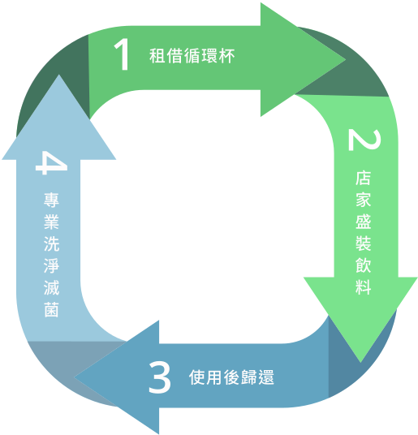
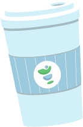
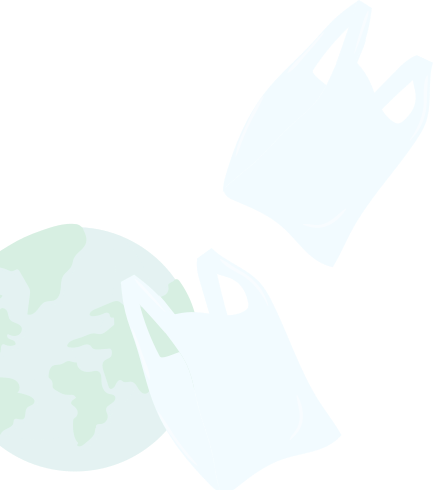
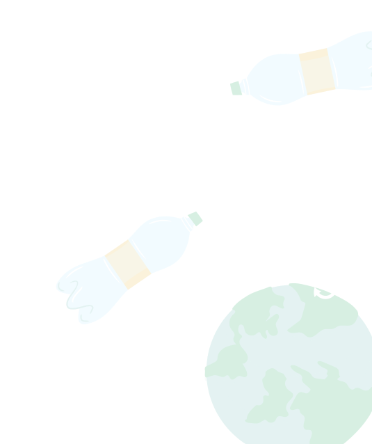
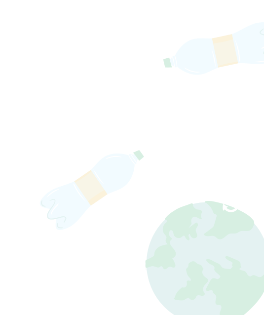
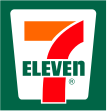
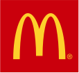

Introduction
循環杯是什麼？
循環杯又稱外借杯，提供於飲品購買的熱門地點，像是咖啡廳、手搖飲店、便利商店等，讓消費者外帶飲品時可以租借循環杯使用、甲地乙還，透過租借、歸還、回收、清洗、再使用機制，達到「減塑、愛環境」的目標。



 

Why is it needed
為什麼需要循環杯
減少塑膠污染
塑膠是一種難以分解的材料，對環境造成極大的污染。一次性使用的塑膠飲料杯更是大量使用且易於產生，造成嚴重的塑膠污染問題。使用循環杯可以減少大量塑膠杯的使用，有效降低環境污染。
提高資源回收利用率
循環杯可重複使用，使用壽命長，相對於一次性使用的塑膠杯來說，能夠更好地提高資源回收利用率。此外，在的生產也相對較為環保，生產過程中能夠更有效地利用資源，減少能源消耗。
How to start
如何開始
Benefits
經濟效益
降低原物料的開採需求
廢棄物轉化為可再生資源，減少對原物料的開採需求。這不僅有助於保護自然生態，還可以減少環境和社會成本。
減少環境汙染問題
減少垃圾的堆放和焚燒所產生的污染，改善空氣和水質，保護生態環境的健康和可持續性，提高綠色就業和經濟增長。
循環流程減少溫室氣體排放
循環利用的過程中，減少溫室氣體的排放並促進可再生能源的發展和應用，提高人類的生活質量和健康。
Policy Support
政策支持
環保署10月31日發布「循環（外借）杯良好服務指引」，讓業者參考依循，未來消費者也只要透過辨認「特定標誌」，就能安心選擇租借。

